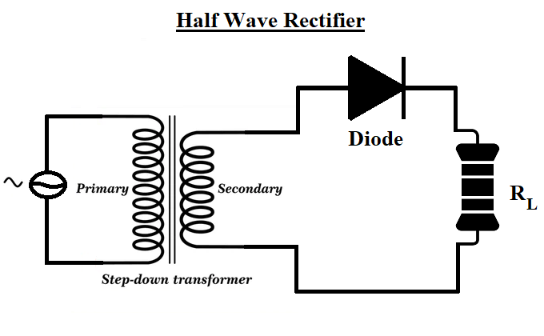
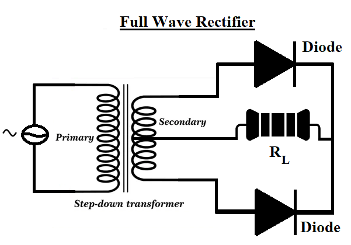
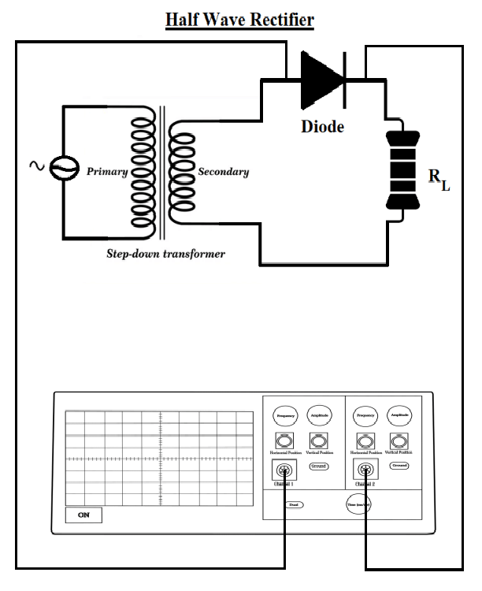
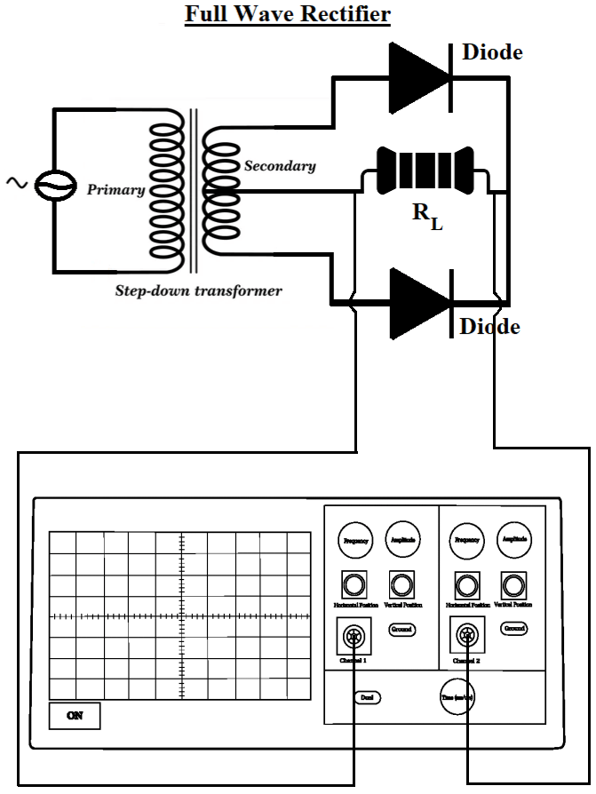

Objective:
- To differentiate between input and output waveforms in Half wave/full wave rectifier
- To calculate the Ripple Factor
Apparatus Used:
Diodes, Step down Transformer, Resistor, DSO
Diode

Resistor





Instructions
- Select half or full wave rectifier and type of transformer from the menu.
- Set the primary turns,secondary turns and resistance value and press the "Connect DSO" button to connect the channels of dso to the rectifier circuit.
- Click the "Get input waveform" button and analyse the input waveform with and without the diode.
- Click the "Get output waveform" button and analyse the rectified output waveform.
- Click on "Show Result" button to check the calculations.
- Calculate the value of Vm ,V rms, V dc and ripple factor, γ=sqrt((Vrms/Vdc)^2-1).
- Click on the "Reset" button to restart the experiment.
CALCULATIONS: Full Wave Rectifier
- From N 1 * V 2 = N 2 * V 1
- N 1= Number of turns in Primary transformer , N 2= Number of turns in Secondary transformer
- V 1= Primary Voltage , V 2 = Secondary Voltage
- Here, V 2 = V m,V rms= V m/ √2
-
-
- V dc= (2 * V m)/ π
- Ripple factor of Full wave Rectifier is, γ = √(V rms/ V dc) 2 - 1
- Theoretical Value of Ripple Factor ≈0.48
- Experimental Value of Ripple factor ,
CALCULATIONS: Half Wave Rectifier
- From N 1 * V 2 = N 2 * V 1
- N 1= Number of turns in Primary transformer , N 2= Number of turns in Secondary transformer
- V 1= Primary Voltage , V 2 = Secondary Voltage
-
- Here, V 2= V m,V rms= Vm/2
- V dc=Vm/π
- Ripple factor of Half wave Rectifier is ,γ = √(Vrms/Vdc)2-1
- Theoretical Value of Ripple Factor ≈1.21
- Experimental Value of Ripple factor,
OUTPUT GRAPH: Half Wave Rectifier
OUTPUT GRAPH: Full Wave Rectifier